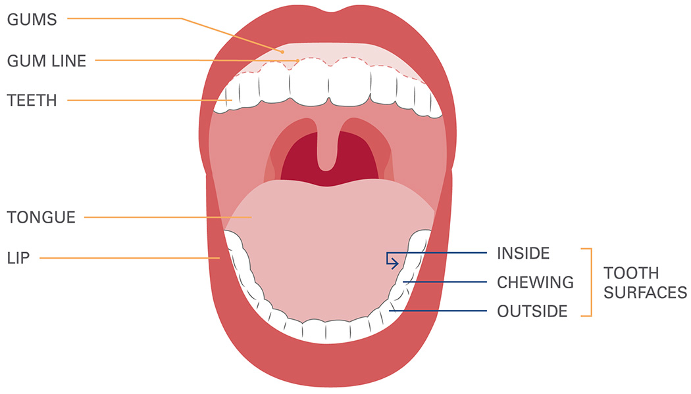
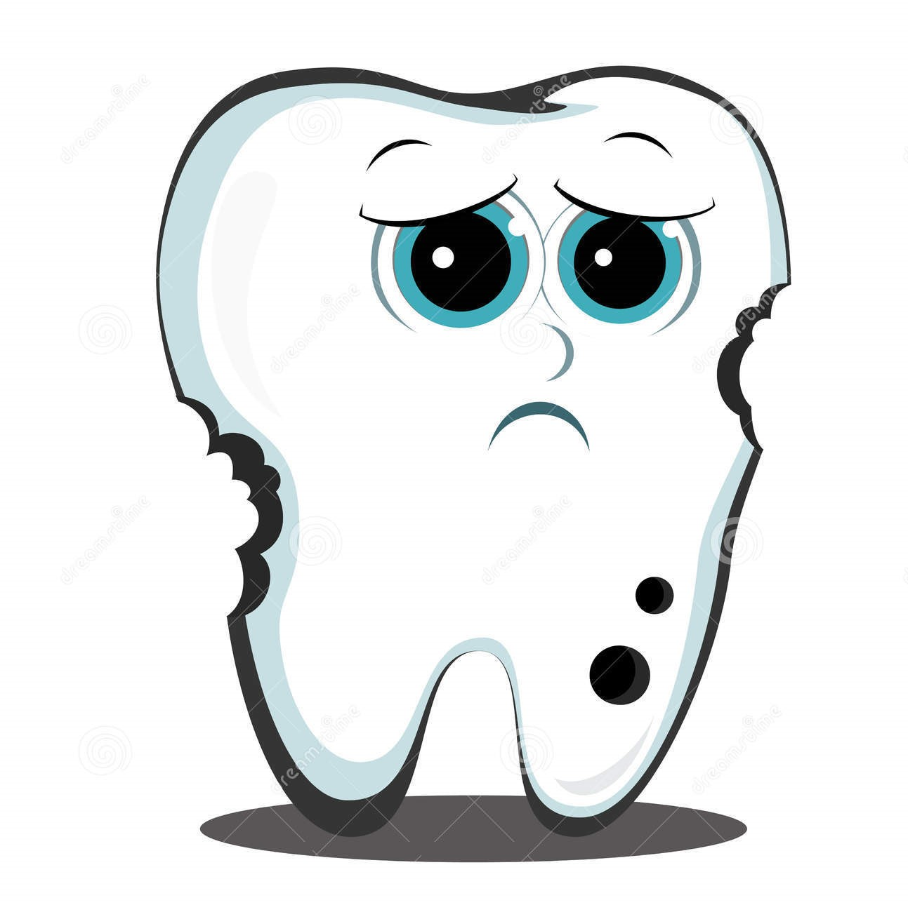

What is Cancer?
Cancer starts when cells in the body start to grow out of control. Cells in nearly any part of the body can become cancer and can spread to other parts of the body.
Oral cancer, as the name suggests, is cancer that starts in the oral cavity. To understand how these cancers occur and how maintaining a proper hygiene can prevent these from happening, it is first important to know the different parts of the mouth or the oral cavity.
Parts of the Mouth (Oral Cavity)
The oral cavity includes the lips, the cheeks, the teeth, the gums, the front two-thirds of the tongue, the floor of the mouth beneath the tongue, and the roof of the mouth.
Tumours and Growths in the Oral Cavity
Many types of tumours (abnormal pile of cells) can develop in the oral cavity. These growths can be classified into 3 main types:
- Benign Growths
- Pre-cancerous Growths
- Cancer
Benign Growths
These tumours are not cancerous. They do not invade other tissues and do not spread to other parts of the body. These non-cancerous tumours can be caused due to various reasons. They are generally harmless, but in some cases, it could cause a few problems (very rarely are they life-threatening). The general treatment for this is to surgically remove them, since they are very unlikely to recur.Pre-cancerous Growths
Pre-cancerous tumours involve abnormal cells that have an increased risk of turning into a cancer. Identification at an early stage can highly reduce the risks from the tumour cells turning cancerous. Treatment includes surgery and chemotherapy.Cancer
More than 90% of the cancers in the oral cavity are called squamous cells. These cells are flat scale-like cells that form the lining of the mouth and throat. If left untreated these cells could spread into the deeper layers of the oral cavity. This could pose serious health risks to the patient.How is Oral Hygiene Related to Cancer?
Poor Oral hygiene is strongly associated with oral cancer, since it aids the carcinogenic potential of the other known carcinogens such as tobacco and alcohol.
It is highly recommended to maintain a proper oral hygiene since not only does it prevent cancer, it also prevents various other diseases from affecting our body.
Oral hygiene is just not restricted to brushing twice a day but also visiting a dentist at least twice a year.

Poor oral hygiene not only causes cancer, but can also cause cavities. Similar to cancer cells, cavities spread to the nearby cells and can cause further complications.
Effects of Cavity
- Heart attack and stroke
- Pneumonia
- Diabetes
- Osteoporosis
Causes for Dental Infections
Sucrose (table sugar) is commonly associated with cavities. Limiting sugar-containing food and drinks is one way to reduce the risk of developing a cavity.
Acidic drinks such as soft drinks lower the pH level of the oral cavity which causes demineralization of enamel and increases the risk of dental cavities.
Ways to Maintain Oral Hygiene
- Brush teeth twice a day
- Floss regularly
- Avoid snacking
- Change toothbrush every three months
- Quit smoking
- Visit dentist regularly
Contact Us
If you require further information email us at csau.new@gmail.com or contact us at +91 94453 XXXXX.